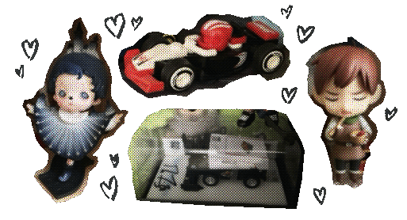

sometimes I feel like
I spend too long worrying about how I should be organizing my collection
than actually collecting what I love.

shouldn't I be building my systems around my collection, and not the other way around?
sometimes, it's really gotten to the point where I decided against something I really wanted,
or (even worse) bought something that I didn't really care for to make a page of cards look a little better.
I really am making problems out of nothing, sometimes.
it's something that I'm working on, for sure.
let's head back.